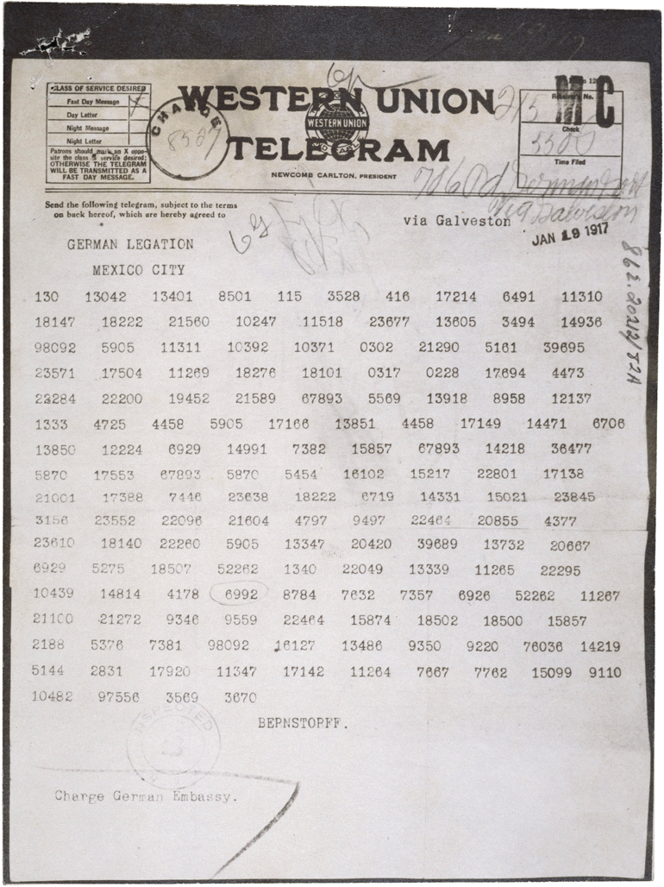

KHMPZFAQTJXHIUUJPAVDYIINIIBMLBKIA

“It seems probable that once the machine thinking method had started, it would not take long to outstrip our feeble powers… They would be able to converse with each other to sharpen their wits. At some stage therefore, we should have to expect the machines to take control.”
11100010 10000000 10011100 01010011 01101111 01101101 01100101 01110100 01101001
We have said that the computable numbers are those whose decimals are calculable by finite means. This requires rather more explicit definition. No real attempt will be made to justify the definitions given until we reach § 9. For the present I shall only say that the justification lies in the fact that the human memory is necessarily limited.We may compare a man in the process of computing a real number to ;i machine which is only capable of a finite number of conditions qI; which will be called " m-configurations ". The machine is supplied with a "tape " (the analogue of paper) running through it, and divided into sections (called "squares") each capable of bearing a "symbol". At any moment there is just one square, say the r-th, bearing the symbol which is "in the machine". We may call this square the "scanned square ". The symbol on the scanned square may be called the " scanned symbol". The "scanned symbol" is the only one of which the machine is, so to speak, "directly aware". However, by altering its m-configuration the machine can effectively remember some of the symbols which it has "seen" (scanned) previously. The possible behaviour of the machine at any moment is determined by the ra-configuration qn and the scanned symbol. This pair qn, © (r) will be called the '' configuration'':thus the configuration determines the possible behaviour of the machines In some of the configurations in which the scanned square is blank (i.e. bears no symbol) the machine writes down a new symbol on the scanned square: in other configurations it erases the scanned symbol. The machine may also change the square which is being scanned, but only by shifting it one place to right or left. In addition to any of these operations the m-configuration may be changed. Some of the symbols written down
